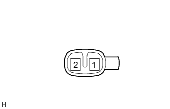

Side Turn Signal Lamp ASSY LH Single Inspection |
| 1. Side -turn signal lamp ASSY LH inspection |
|  |
LED lighting inspection
Connect the battery plus to one terminal of the connector, and the negative of the battery to the two terminals to check the lighting state of the LED.